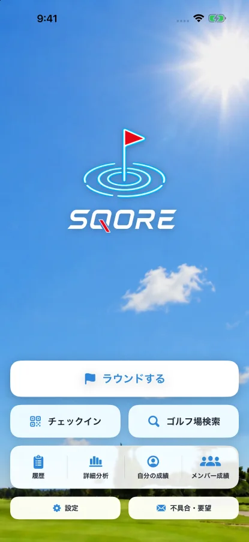
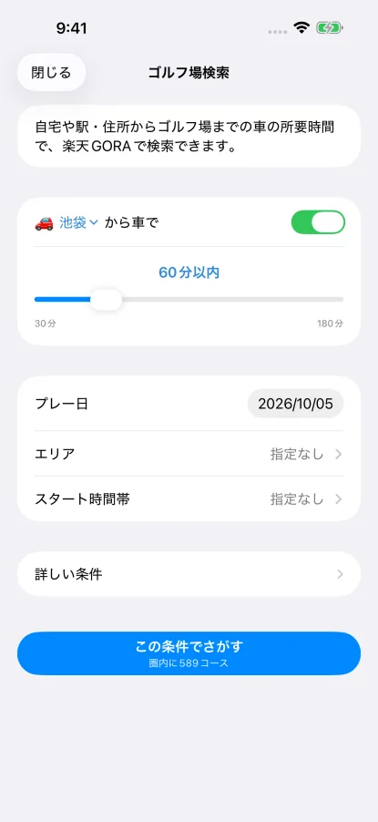
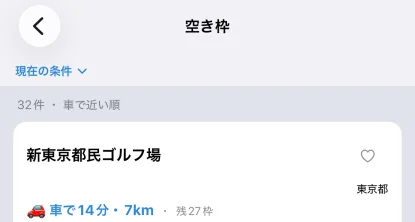

自宅から車で60分以内の、予約が空いているゴルフ場を探す
行けるゴルフ場は、距離ではなく「朝、車で何分か」で決まります。SQOREのゴルフ場検索は、自宅や駅・住所を起点に車の所要時間で絞り、プレー日に空き枠のあるプランだけを並べます。無料です。
できること
- 車で◯分以内で絞る自宅や駅・住所から、車で30分〜180分以内（10分刻み）で探せます。
- 所要時間はプレー日の朝5時出発で測る結果の行には「車で◯分・◯km」と出ます。
- 空き枠のあるプランだけが出る楽天GORAで、その日に予約できるプランだけを並べます。
- プランを押すと予約ページが開く予約は楽天GORAのページで行います。
- お気に入りは一覧のいちばん上に行の♡を押したゴルフ場は、次から「お気に入り」として上にまとまります。
使い方
- トップの「ゴルフ場検索」を押す → 条件画面が開く
- 「自宅」を押す → メニューが出る。「自宅の設定…」で自宅を登録するか、「住所・駅名を入れる…」で駅名（例「名古屋駅」）を入れて「この場所にする」を押す
- 「から車で」のスライダーで「◯分以内」を決める
- 「エリア」「スタート時間帯」を選ぶ（何も選ばないと指定なし）。人数・料金などは「詳しい条件」の中
- 「この条件でさがす」を押す → ゴルフ場が数件ずつ順に出てくる
- 行の♡を押す → 次から一覧のいちばん上にまとまる
- プランを押す → 楽天GORAの予約ページが開く（「もっとプランを見る」で他のプランも見られる）



他の予約サイトの検索と違うところ
- 所要時間はプレー日の朝5時出発で測るスタートに間に合うよう出る時間帯で測るので、渋滞する夕方の所要時間になりません。
- 空き枠が無いゴルフ場は出ない近くても、その日に予約できるプランが無ければ一覧に入りません。
- 予約はGORA、当日はSQORE予約は楽天GORAで済ませ、ラウンド当日のスコアと握り（＝仲間内でポイントを競う定番ゲーム）の計算はSQOREで行います。
条件で絞れること
「プレー日」「エリア」「スタート時間帯」は条件画面に、ほかは「詳しい条件」の中にあります。項目名はアプリの表示のままです。
| 項目 | 選べること |
|---|---|
| プレー日 | 回る日（最初は明日） |
| エリア | 都道府県。複数選べる |
| スタート時間帯 | スタートの時間帯 |
| 人数 | 回る人数 |
| プレースタイル | セルフ・キャディ付 など |
| プラン内容 | 昼食付・1ドリンク付 など |
| 除外 | 「オープンコンペを除く」「レッスンを除く」など |
| ゴルフ場の設備 | 「サウナあり」「練習場あり」など |
| コース | 丘陵・林間 などの種類 |
| 料金 | 料金の下限・料金の上限（1人あたりの総額） |
| ゴルフ場名 | 名前で絞る |
サウナのあるゴルフ場には、結果に「サウナイキタイ」（サウナ専門の情報サイト）の情報をもとにした印が付きます。外気浴まで揃うコースは関東のゴルフ場サウナの記事で1件ずつ確かめています。
よくある質問
ゴルフ場検索は無料ですか？
無料です。検索もお気に入りも、プレミアムに入らずに使えます。
現在地から探せますか？
出発する場所は、自宅か、入力した駅名・住所です。自宅は「自宅の設定…」から、現在地でも住所でも登録できます。
予約はSQOREでしますか？
予約は楽天GORAのページで行います。プランを押すと、そのプランの予約ページが開きます。
海外のゴルフ場も出ますか？
検索で出るのは国内のゴルフ場です。海外のゴルフ場は、ラウンドを始めるときのコース選択で選べます。
検索した日の渋滞は入りますか？
入りません。プレー日の朝5時に出発した場合の時間です。プレー日が今日で、もう5時を過ぎているときは、いま出発した場合の時間になります。
ラウンド当日はSQOREで
予約したら、当日のスコアと握りの計算はアプリでまとめて済みます。
ゴルフ場検索はSQOREのアプリで
トップの「ゴルフ場検索」から、車で◯分以内にある、予約が空いているゴルフ場を探せます。ラウンド当日は、打数を入れるだけでスコアも握りのポイントも自動計算です。